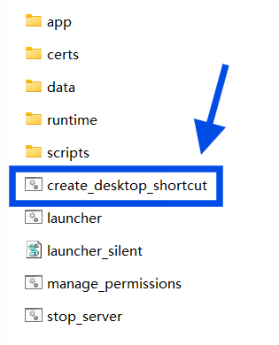
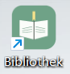
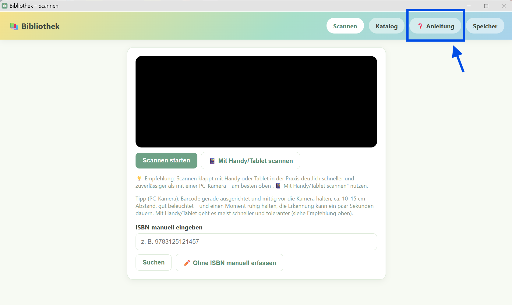

Ein lokales Bibliotheksverwaltungssystem für private Büchersammlungen. Ein Gerät (ein Windows-Computer) im WLAN läuft als Server; alle Tablets und Handys im selben WLAN greifen per Browser darauf zu, um Bücher zu erfassen, zu suchen und zu bearbeiten — auf allen Geräten mit denselben Daten. Der komplette Bestand lässt sich jederzeit als Word-, Excel- oder PDF-Datei exportieren.
ZIP an einem beliebigen Ort entpacken. Darin einmal
create_desktop_shortcut.bat doppelklicken – das legt eine
Desktop-Verknüpfung „Bibliothek" mit eigenem Icon an (leichter
wiederzufinden als die unauffälligen Dateien im entpackten Ordner):

→
Ab dann einfach über dieses Icon starten – öffnet Server und Bedienoberfläche automatisch.
Der Server startet in einem eigenen Fenster („Bibliothekssystem
Server"), danach öffnet sich die Bedienoberfläche automatisch in einem
eigenen App-Fenster (Microsoft Edge im App-Modus, ohne
Adressleiste/Tabs – kein gewöhnlicher Browser-Tab) unter
https://localhost:8000.
Dabei zeigt der Browser einmalig eine Sicherheitswarnung („Nicht sicher" bzw. „Ihre Verbindung ist nicht privat"). Grund: Diese Software läuft über eine lokale Adresse (localhost bzw. 192.168.x.x) statt eine echte Internet-Adresse – dafür dürfen offizielle Zertifizierungsstellen grundsätzlich keine Zertifikate ausstellen, die App nutzt deshalb ein selbst erzeugtes, das der Browser nicht kennt. Das ist im eigenen WLAN unbedenklich: einfach auf „Erweitert" und dann „Trotzdem fortfahren" klicken. Das ist pro Gerät nur einmal nötig.
Öffnet sich nicht automatisch ein Einführungs-/Willkommensfenster, oben rechts auf „❓ Anleitung" klicken, um sich einen vollständigen Überblick über die Software zu verschaffen (dauert ca. 5 Minuten):

Win + R
drücken, %LOCALAPPDATA%\Bibliothekssystem eingeben und
Enter drücken – der Ordner öffnet sich, darin alles löschen.
Wir wünschen viel Freude mit der Bibliothek!